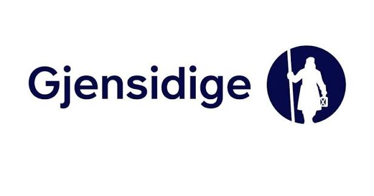

Hva får du egentlig igjen for forsikringspremien?
8. aug 2026
Når forbrukere sammenligner forsikringer, er det lett å se først på prisen.
Hvilket selskap er billigst? Hvor mye kan jeg spare i året?
Men for en forsikringskunde er det minst like relevant å stille et annet spørsmål:
Hvor mye får jeg egentlig igjen for forsikringspremien jeg betaler?
En billig forsikring er ikke nødvendigvis et godt kjøp dersom selskapet samtidig betaler ut relativt lite tilbake til kundene i erstatninger, eller dersom kunder ofte må klage for å få riktig skadeoppgjør.
Det finnes ingen enkel statistikk som kan fortelle hvilket forsikringsselskap som er best for den enkelte kunde. Men regnskapstall fra forsikringsselskapene og statistikk fra Finansklagenemnda kan gi noen interessante holdepunkter.
Nemndinnsikt har sett nærmere på If, Tryg og Gjensidige og deres regnskapstall og klagestatisikk fra Finansklagenemnda.

Hvor mye går tilbake til skader?
Et av nøkkeltallene i forsikringsbransjen er «claims ratio», ofte omtalt som skadeprosent. Disse tallene finner du ikke i markedsføringene hos selskapene, eller i vilkårene. Disse må letes frem fra deres årsregnskaper.
Tallet viser forholdet mellom erstatningsutbetalinger tilbake til kundene og premieinntekter.
Forenklet betyr en claims ratio på 70 prosent at selskapet har 70 kroner i erstatningsutbetalinger for hver 100 kroner i premieinntekter.
Gjennomsnittet for 2023–2025 var:
| Selskap | Claims ratio |
|---|---|
| Gjensidige | 72,6 % |
| Tryg | 67,9 % |
| If | 67,0 % |
Gjensidige hadde dermed den høyeste gjennomsnittlige utbetalingen av de tre selskapene. If var det selskapet som betalte tilbake minst til sine kunder relativt til premieinntektene som kundene innbetalte.
Forskjellen mellom Gjensidige og If var 5,6 prosentpoeng.
Forenklet tilsvarer det 5,60 kroner mer i erstatningsutbetalinger per 100 kroner i premieinntekter hos Gjensidige enn hos If.
Skadeprosenten og utbtalinger påvirkes også blant annet av hvilke forsikringer selskapet selger, skadefrekvens, store enkeltskader, værhendelser og hvordan risikoen er priset.
Men fra kundens perspektiv er tallet likevel interessant: Det sier noe om hvor stor del av premieinntektene som samlet går til å dekke skader for kundene.
Hva skjer når kunden klager?
Et annet spørsmål er hvor ofte kunden må klage for å få riktig utbetalt skadeoppgjør.
Finansklagenemnda behandler tvister mellom kunder og finansforetak, blant annet forsikringsselskaper.
Store selskaper vil naturlig få flere klager enn små selskaper. Derfor er antallet saker med kundemedhold her sett i forhold til selskapenes markedsandeler for å kunne gjøre det sammenlignbart.
For 2024 gir beregningen følgende resultat:
| Selskap | Kundemedhold per markedsandel |
|---|---|
| Tryg | 0,403 |
| Gjensidige | 0,683 |
| If | 0,698 |
Setter vi Tryg til indeks 100, blir forskjellen:
| Selskap | Indeks |
|---|---|
| Tryg | 100 |
| Gjensidige | 169 |
| If | 173 |
If lå dermed rundt 73 prosent høyere enn Tryg på dette målet, mens Gjensidige lå rundt 69 prosent høyere.
Dette betyr ikke at en tilfeldig If-kunde har 73 prosent større sannsynlighet for å få et feilaktig avslag i skadeoppgjøret.
Statistikken omfatter bare saker som faktisk blir klaget inn til Finansklagenemnda. Forskjellene kan også påvirkes av andre forhold.
Men tallene viser at det er forskjeller mellom selskapene også når man ser på utfallet av klagesaker.
To ulike mål gir ulike bilder
De to målene sier ikke det samme.
Claims ratio sier noe om hvor stor andel av premieinntektene som går tilbake til kundekollektivet i form av erstatningsutbetalinger.
FinKN-statistikken sier noe hvor ofte kunden må klage for å få korrekt skadeoppgjør.
Sammenligningen gir dette bildet:
| Selskap | Claims ratio | FinKN-resultat |
|---|---|---|
| Gjensidige | Høyest tilbakebetaling | Mellomnivå |
| Tryg | Mellomnivå | Lavest kundemedhold |
| If | Lavest tilbakebetaling | Taper flest saker mot egne kunder |
Gjensidige kommer best ut dersom man bare ser på hvor stor andel av premieinntektene som går tilbake til kundene som erstatningsutbetalinger.
Tryg kommer best ut når man ser på antallet tap mot egne kunder i Finansklagenemnda i forhold til markedsandelen.
If har på sin side både den laveste tilbakebetalingene til kundene og samtidig den høyeste forekomsten av kundeklager de taper mot sine egne kunder i FINKN.
Pris forteller ikke hele historien
Det viktigste for den enkelte kunde vil fortsatt være forsikringsvilkår, egenandel, forsikringssummer, priser og hvilken dekning man faktisk trenger.
Men pris alene forteller ikke hvor god en forsikring er.
En forsikring kjøpes først og fremst for den dagen noe går galt.
Derfor kan det også være relevant å spørre hvor stor del av premieinntektene som faktisk går fra forsikringsselskapet og tilbake til kundene som skadeutbetalinger, og hva som skjer dersom kunden og forsikringsselskapet blir uenige om oppgjøret.
Regnskapstall og klagestatistikk kan derfor være interessant å se på i tillegg til pris.
Dette gir derfor forbrukerne mer informasjon enn bare prislappen.